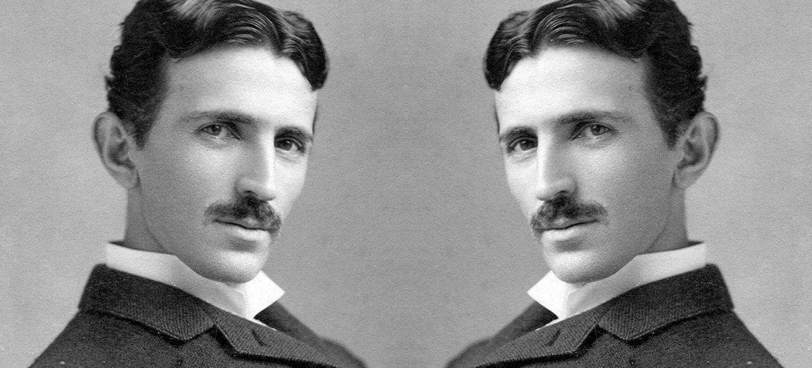

Nikola Tesla

Nikola Tesla, (born July 9/10, 1856, Smiljan, Austrian Empire [now in Croatia]—died January 7, 1943, New York, New York,
U.S.).
- 1. Alternating Current - This is where it all began, and what ultimately caused such a stir at the 1893 World’s Expo in Chicago. A war was leveled ever-after between the vision of Edison and the vision of Tesla for how electricity would be produced and distributed.
- 2. Light - Of course Nikola Tesla didn’t invent light itself, but he did invent how light can be harnessed and distributed. Tesla developed and used fluorescent bulbs in his lab some 40 years before industry “invented” them.
- 3. X-rays - Electromagnetic and ionizing radiation was heavily researched in the late 1800s, but Nikola Tesla researched the entire gamut. Everything from a precursor to Kirlian photography, which has the ability to document life force, to what we now use in medical diagnostics, this was a transformative invention of which Tesla played a central role.
- 4. Radio - Guglielmo Marconi was initially credited, and most believe him to be the inventor of radio to this day. However, the Supreme Court overturned Marconi’s patent in 1943, when it was proven that Tesla invented the radio years previous to Marconi.
- 5. Remote Control - This invention was a natural outcropping of radio. Patent No. 613809 was the first remote controlled model boat, demonstrated in 1898. Utilizing several large batteries; radio signals controlled switches, which then energized the boat’s propeller, rudder, and scaled-down running lights.
- 6. Electric Motor - Nikola Tesla’s invention of the electric motor has finally been popularized by a car brandishing his name. While the technical specifications are beyond the scope of this summary, suffice to say that Tesla’s invention of a motor with rotating magnetic fields could have freed mankind much sooner from the stranglehold of Big Oil.
- 7. Robotics - Nikola Tesla’s overly enhanced scientific mind led him to the idea that all living beings are merely driven by external impulses. He stated: “I have by every thought and act of mine, demonstrated, and does so daily, to my absolute satisfaction that I am an automaton endowed with power of movement, which merely responds to external stimuli.” Thus, the concept of the robot was born.
- 8. Laser - Nikola Tesla’s invention of the laser may be one of the best examples of the good and evil bound up together within the mind of man. Lasers have transformed surgical applications in an undeniably beneficial way, and they have given rise to much of our current digital media.
- 9 and 10. Wireless Communications and Limitless Free Energy - Nikola Tesla built a tower that would use the natural frequencies of our universe to transmit data, including a wide range of information communicated through images, voice messages, and text. This represented the world’s first wireless communications, but it also meant that aside from the cost of the tower itself, the universe was filled with free energy that could be utilized to form a world wide web connecting all people in all places, as well as allow people to harness the free energy around them.